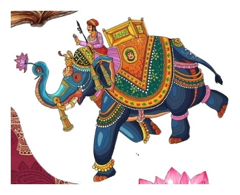
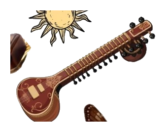

BRAJ • KRISHNA HERITAGE
Vrindavan
→ Barsana
Temple rituals, Braj bhasha, Holi traditions, raslila, local food, sacred soundscapes and community stories.
वृन्दावनबरसाना
Enter Braj →
🦚


Follow a sacred thread through pilgrimages, disappearing sounds, family photographs, artisan stories and traditions that are still alive.
For the SIH prototype, YatraSutra goes deep instead of going everywhere—two culturally rich circuits with real traditions, sounds, stories and local experiences.
Temple rituals, Braj bhasha, Holi traditions, raslila, local food, sacred soundscapes and community stories.
Jyotirlinga heritage, Krishna's coastal city, temple traditions, sea-linked folklore, devotional music and local craft.
No boring destination dropdown. Give Bharat a spin and we'll pick a culturally rich journey that fits a student-friendly budget.
₹7,850 • 3 days • 4 traditions • 2 artisan experiences
Explore living 360° panoramic views of Vrindavan's sacred shrines. Drag to look around in 360 degrees, inspect architectural details, and switch between holy temples.
Stands 54 meters tall, hand-carved with traditional Kalinga and Rajasthani temple motifs.
Carved completely from pristine white Italian Carrara marble, Prem Mandir stands as an architectural marvel dedicated to Radha Krishna and Sita Rama.
Travellers trade a useful modern skill for traditional knowledge—creating a two-way relationship with heritage keepers.
32 years preserving Blue Pottery
A zero-signal SOS concept where nearby devices can relay a lost-family or emergency ping locally until it reaches a connected help point.
3 nearby relay devices detected
Loading your persistent journey…
Redeem with participating community stays, workshops and local transport partners.
Prototype demonstrates a transparent eligibility flow—not a live temple queue or medical verification system.